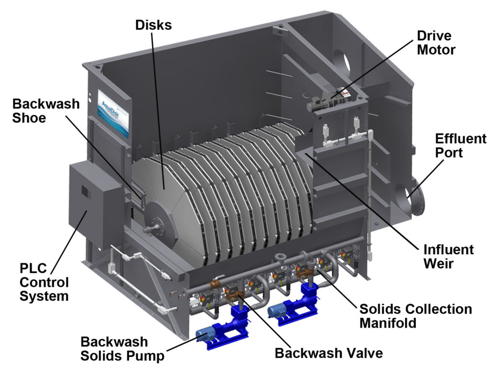

The world's most installed cloth media disc filter for tertiary treatment. Designed for in-channel installation, it delivers high-quality effluent with automatic backwash and ultra-low energy consumption.

The AquaDisk® is a disc-shaped cloth media filter designed for direct installation in existing concrete channels. Effluent flows outside-in through rotating discs covered with high-efficiency cloth media, retaining suspended solids while allowing clarified effluent to pass through.
The system operates continuously with automatic backwash triggered by differential pressure, ensuring stable performance without interrupting treatment. Low energy consumption and autonomous operation make the AquaDisk® ideal for municipal and industrial WWTPs seeking tertiary polishing at reduced operating costs.
Effluent TSS consistently below 10 mg/L — suitable for reuse and strict discharge standards.
Continuous and automatic disc cleaning without stopping the system or diverting flow.
Simplified installation in existing concrete channels — no major civil works required.
Effluent enters the inlet channel and flows around the submerged cloth media discs. Through differential pressure, the liquid passes outside-in through the cloth media, which retains suspended solids on the outer surface of the discs.
As solids accumulate and differential pressure increases, the system automatically initiates backwash: backwash shoes slide across the disc surface with pressurized water jets, removing solids into a collector and discharging them via a dedicated pump.
Secondary effluent enters the inlet channel and surrounds the cloth media discs.
Liquid passes outside-in through the discs; solids are retained on the outer surface.
Backwash shoes continuously clean the discs without interrupting filtration.
Tertiary polishing to meet strict discharge standards
High-quality effluent production for industrial and agricultural reuse
Tertiary treatment for industries with strict discharge standards
High efficiency in total phosphorus removal with coagulant addition
Meeting discharge standards for sensitive receiving water bodies
Upgrading existing plants without extensive civil works
Our technical team evaluates your needs and presents the ideal AquaDisk® solution for your project.